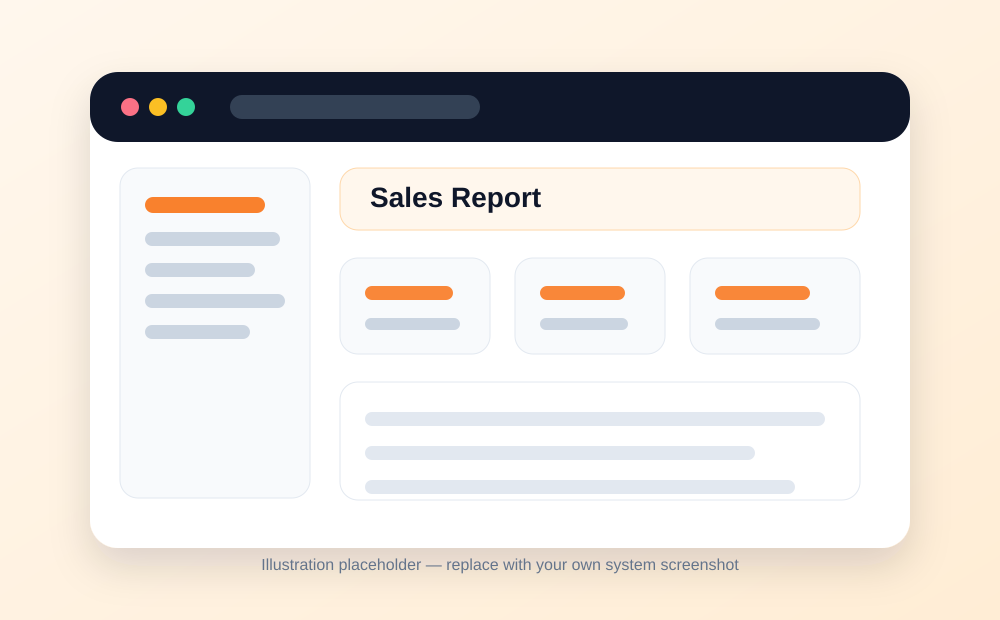
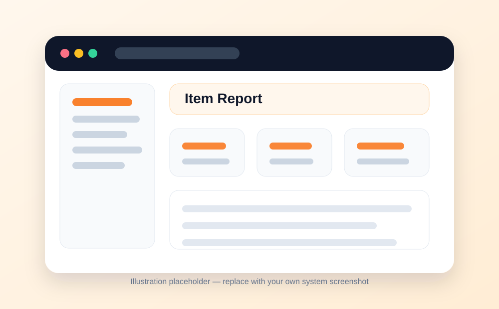
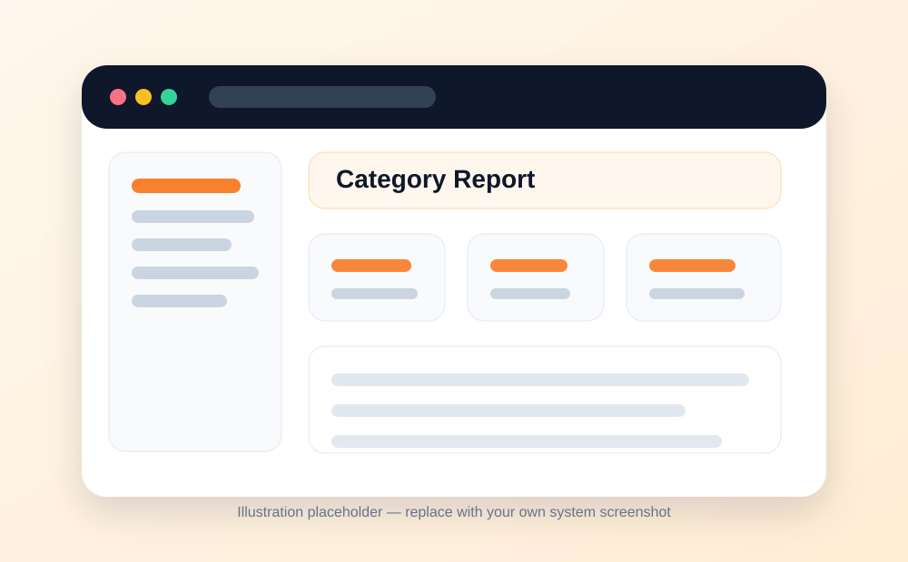

📊
Sales & Finance
Reports Menu
Use reports to understand sales performance by period, item, and category.
What this module is for
- Reports help managers understand how the restaurant is performing.
- They summarize sales and item performance so decisions can be made using actual data.
- The main report groups include sales reports, item reports, and category reports.
Main report types
- Sales report: review sales activity and revenue for a selected period.
- Item report: analyze how individual menu items are selling.
- Category report: compare performance across food or product categories.
Typical workflow
- Open the Reports menu.
- Choose the report type you want to view.
- Select the date range or filters available in your installation.
- Review the report on screen or export/print it if your installation supports that option.
Good practice
- Check sales reports daily after closing.
- Use item reports to identify fast-moving and slow-moving items.
- Use category reports when deciding menu changes, offers, and stock planning.
- Compare reports with payment records for reconciliation.
Screens / visual guide
The images below are clean placeholders prepared for the documentation website. Replace them with screenshots from your own installed system when you are ready.


